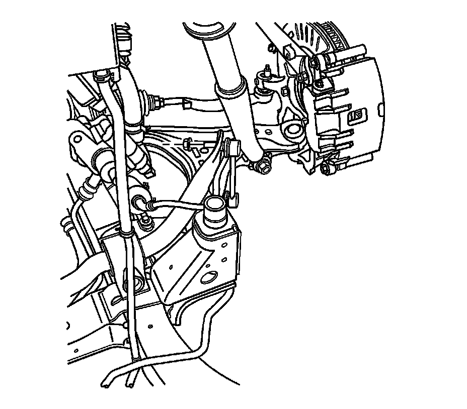

Front Suspension
Stabilizer Shaft Insulator Replacement
Removal Procedure
1. Raise and support the vehicle. Refer to Lifting and Jacking the Vehicle (Service and Repair) .
2. Remove the tires and wheels. Refer to Tire and Wheel Removal and Installation (Service and Repair) .

3. Remove stabilizer shaft link to stabilizer shaft retaining nut.
4. Separate the stabilizer shaft link from the stabilizer shaft.
5. Remove the stabilizer shaft bracket mounting bolts.
6. Remove the stabilizer shaft bracket.
7. Remove the stabilizer shaft insulator.
Installation Procedure
1. Install the stabilizer shaft left hand insulator to the stabilizer shaft with the slit facing rearward and the right hand insulator to the stabilizer shaft with the slit facing forward.
2. Install the stabilizer shaft bracket.
Notice: Refer to Fastener Notice (Fastener Notice) .
3. Install the stabilizer shaft bracket mounting bolts.
Tighten the bolts to 110 N.m (81 lb ft).
4. Install the stabilizer shaft link to the stabilizer shaft.
5. Install stabilizer shaft link to stabilizer shaft retaining nut.
Tighten the nut to 115 N.m (95 lb ft).
6. Install the tires and wheels. Refer to Tire and Wheel Removal and Installation (Service and Repair) .
7. Lower the vehicle.